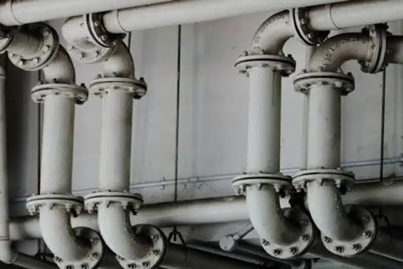

Daftar Isi
- Apa Saja Komponen Instalasi Plumbing?
- Bagaimana Merencanakan Jalur Pipa dan Shaft?
- Berapa Kemiringan Pipa Air Kotor yang Dianjurkan?
- Mengapa Perangkap Air dan Ventilasi Pipa Penting?
- Bagaimana Memilih Pipa dan Fitting yang Tepat?
- Sambungan ke Septic Tank dan Sumur Resapan
- Bagaimana Uji Tekan dan Uji Aliran Dilakukan?
- Kesalahan Instalasi Plumbing yang Sering Terjadi
- FAQ
Instalasi plumbing kamar mandi lantai 2 adalah sistem pipa air bersih, air kotor, dan ventilasi yang harus miring, kedap, teruji, dan mudah diperiksa.
- Plumbing kamar mandi lantai 2 terdiri atas pipa air bersih, pipa air kotor, perangkap air, pipa ventilasi, dan shaft.
- Pipa air kotor berdiameter kecil umumnya dipasang dengan kemiringan sekitar 2 persen.
- Perangkap air menahan bau, dan pipa ventilasi menjaga tekanan udara di dalam sistem.
- Uji tekan dan uji aliran wajib dilakukan sebelum pipa ditanam atau ditutup.
- Posisi kamar mandi di atas area basah lantai 1 memperpendek jalur pipa vertikal.
Apa Saja Komponen Instalasi Plumbing Kamar Mandi Lantai 2?
Komponen instalasi plumbing kamar mandi lantai 2 meliputi pipa air bersih, pipa air kotor, floor drain, perangkap air, pipa ventilasi, sanitary, serta shaft vertikal.
Setiap komponen memiliki fungsi berbeda. Pipa air bersih membawa air bertekanan menuju kran, shower, dan kloset. Pipa air kotor membawa air bekas dan limbah menuju bak kontrol atau tangki septik. Floor drain mengalirkan air lantai, dan perangkap air menahan bau.
Pipa ventilasi berfungsi menyeimbangkan tekanan udara sehingga aliran di dalam pipa lancar. Shaft adalah ruang vertikal yang menampung pipa dari lantai 2 ke lantai 1. Akses pemeriksaan atau clean-out melengkapi sistem agar penyumbatan dapat dibersihkan.
Bagaimana Merencanakan Jalur Pipa dan Shaft?
Jalur pipa direncanakan sejak gambar kerja dengan menempatkan kamar mandi lantai 2 di atas area basah lantai 1 atau shaft agar pipa vertikal pendek.
Perencanaan yang matang menghindari pipa yang berbelok-belok. Kamar mandi lantai 2 yang berada tepat di atas kamar mandi, dapur, atau shaft lantai 1 memungkinkan pipa turun lurus. Jalur yang pendek mengurangi risiko sumbatan, kebocoran, dan biaya material.
Bila denah tidak memungkinkan, pipa dapat dibelokkan menuju shaft. Belokan sebaiknya memakai fitting bersudut landai dan tetap menjaga kemiringan. Posisi shaft juga perlu memberi ruang bagi perawatan, misalnya panel akses yang dapat dibuka.
Bukaan pada pelat untuk pipa harus tercantum dalam gambar struktur. Pemasangan sleeve saat pengecoran lebih aman daripada membobok pelat yang sudah mengeras.
Berapa Kemiringan Pipa Air Kotor yang Dianjurkan?
Pipa air kotor berdiameter kecil umumnya dipasang dengan kemiringan sekitar dua persen atau satu banding lima puluh agar air dan padatan mengalir tanpa mengendap.
Kemiringan sekitar 2 persen berarti pipa turun sekitar 2 cm untuk setiap 1 meter panjang (Sumber: prinsip perencanaan sistem plambing yang mengacu pada SNI 8153:2015 dan praktik plumbing umum). Angka pastinya dapat bervariasi menurut diameter pipa, jenis buangan, dan ketentuan setempat, sehingga acuan resmi tetap perlu dirujuk.
Kemiringan yang terlalu kecil membuat padatan mengendap dan pipa tersumbat. Kemiringan yang terlalu besar membuat air mengalir cepat, meninggalkan padatan di belakang. Karena itu, kemiringan harus konsisten sepanjang jalur.
Pemasangan sebaiknya diperiksa dengan alat ukur kemiringan sebelum pipa ditutup. Penyangga pipa juga perlu dipasang rapat agar pipa tidak melendut.
Mengapa Perangkap Air (Water Seal) dan Ventilasi Pipa Penting?
Perangkap air menahan bau dari saluran pembuangan, sedangkan pipa ventilasi menyeimbangkan tekanan udara sehingga air di perangkap tidak tersedot dan aliran tetap lancar.
Perangkap air adalah lengkungan pipa yang selalu menyimpan sedikit air. Air ini bekerja seperti penutup yang mencegah gas dari saluran naik ke kamar mandi. Kedalaman air pada perangkap umumnya sekitar 50 mm atau lebih.
Tanpa ventilasi, aliran air deras dapat menciptakan tekanan negatif yang menyedot air dari perangkap. Akibatnya bau saluran muncul dan terdengar bunyi gemuruh saat air dibuang. Pipa ventilasi mengalirkan udara sehingga tekanan tetap seimbang.
Floor drain yang jarang dipakai dapat kehilangan air perangkap karena menguap. Pengisian air secara berkala membantu mempertahankan segel air.
Bagaimana Memilih Pipa dan Fitting yang Tepat?
Pemilihan pipa didasarkan pada fungsi, tekanan, dan suhu: PVC berstandar SNI untuk air kotor, PPR atau PVC tekanan untuk air bersih, dengan fitting sepadan.
Pipa air kotor umumnya memakai PVC dengan diameter sesuai fungsi. Kloset membutuhkan diameter lebih besar dibandingkan floor drain atau wastafel. Sambungan dilem dengan bahan yang sesuai agar rapat.
Pipa air bersih dapat memakai PVC tekanan atau PPR. PPR sering dipakai untuk jalur air panas dan dingin karena sambungan dilebur sehingga menyatu. Apa pun jenisnya, pilih produk berstandar dan bermerek jelas.
Fitting harus sesuai jenis pipa. Kombinasi pipa dan fitting dari sistem berbeda berisiko bocor. Untuk pipa yang ditanam di dinding atau pelat, sambungan sebaiknya diminimalkan.
Bagaimana Sambungan ke Septic Tank dan Sumur Resapan?
Air kotor kamar mandi lantai 2 turun lewat pipa vertikal menuju bak kontrol dan tangki septik sesuai SNI 2398:2017 serta jarak dari sumber air.
Setelah keluar dari shaft di lantai 1, pipa air kotor mengalir menuju bak kontrol. Bak kontrol memudahkan pemeriksaan dan pembersihan. Dari sana, air masuk ke tangki septik yang dirancang mengikuti standar, misalnya SNI 2398:2017 tentang tata cara perencanaan tangki septik.
Kapasitas tangki disesuaikan jumlah pengguna. Jarak antara tangki septik dan sumber air bersih perlu diperhatikan agar tidak terjadi pencemaran. Ketentuan jarak mengikuti peraturan setempat dan rekomendasi tenaga ahli sanitasi.
Pipa ke arah tangki juga harus memiliki kemiringan yang konsisten. Hindari belokan tajam yang mudah tersumbat.
Bagaimana Uji Tekan dan Uji Aliran Dilakukan?
Uji tekan memeriksa kebocoran pipa air bersih, sedangkan uji aliran memastikan pipa air kotor mengalir lancar; keduanya dilakukan sebelum pipa ditutup adukan dan keramik.
Uji tekan dilakukan dengan mengisi pipa air bersih dengan air atau udara bertekanan, lalu mengamati apakah tekanan turun dalam jangka waktu tertentu. Penurunan tekanan menandakan kebocoran yang harus dicari dan diperbaiki.
Uji aliran dilakukan dengan menuang air dalam jumlah cukup ke floor drain dan sanitary, lalu memeriksa apakah air mengalir lancar tanpa genangan atau bunyi tidak wajar. Sambungan pipa juga diperiksa untuk mendeteksi rembesan.
Uji sebaiknya dilakukan oleh pelaksana dan disaksikan pemilik atau pengawas. Foto dan catatan hasil uji membantu bila muncul masalah di kemudian hari.
Apa Kesalahan Instalasi Plumbing yang Sering Terjadi?
Kesalahan instalasi plumbing yang sering terjadi mencakup pipa terlalu datar, tanpa akses pemeriksaan, sambungan tidak rapat, floor drain tanpa perangkap, dan pipa ditanam tanpa uji.
Berikut penjelasan singkatnya:
- Pipa terlalu datar. Padatan mengendap dan sumbatan sering terjadi.
- Tanpa akses pemeriksaan. Penyumbatan harus ditangani dengan membongkar lantai.
- Sambungan tidak rapat. Lem tidak merata atau pipa tidak masuk penuh ke fitting.
- Floor drain tanpa perangkap. Bau saluran naik ke ruangan.
- Pipa ditanam tanpa uji. Kebocoran baru ketahuan setelah keramik dipasang.
- Tidak ada ventilasi. Terdengar bunyi gemuruh dan perangkap air tersedot.
- Diameter pipa terlalu kecil. Aliran terhambat pada penggunaan bersamaan.
Kesalahan ini dapat dicegah dengan gambar kerja yang jelas dan pengawasan yang teliti. Detail waterproofing di sekitar pipa tembus dibahas pada artikel waterproofing kamar mandi lantai 2.